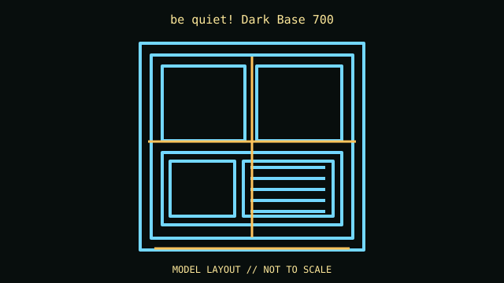

[ IDENTIFIED ENCLOSURE // E-ATX REVERSIBLE MID-TOWER ]
be quiet! Dark Base 700
241 × 519 × 544 mm (W × H × D); E-ATX reversible mid-tower. Board fit: E-ATX up to 275 mm wide, ATX, microATX and Mini-ITX; seven expansion slots. GPU: 286 mm with the HDD cage installed, or up to 430 mm without the cage. CPU cooler: 180 mm maximum CPU-cooler height. Radiator: Front and top up to 360 mm; rear supports 120/140 mm. Check board edge, memory and radiator/fan stack together. PSU: ATX PSU 150–285 mm, subject to cage and cable-routing configuration.

REVISION / CONFIGURATION CAVEAT: The Dark Base 700 supports inverted/reversed layouts; assembly orientation, drive-cage placement and motherboard width affect clearances. This is not the Dark Base Pro 900.
Mechanical specifications and fit
| Exact model | be quiet! Dark Base 700 — E-ATX reversible mid-tower. |
|---|---|
| Dimensions and construction | 241 × 519 × 544 mm (W × H × D); see cited manufacturer page/manual for measured envelope and revision-specific detail. |
| Motherboard form-factor fit | E-ATX up to 275 mm wide, ATX, microATX and Mini-ITX; seven expansion slots. |
| GPU clearance | 286 mm with the HDD cage installed, or up to 430 mm without the cage. |
| CPU-cooler clearance | 180 mm maximum CPU-cooler height. |
| Radiator clearance | Front and top up to 360 mm; rear supports 120/140 mm. Check board edge, memory and radiator/fan stack together. |
| PSU clearance | ATX PSU 150–285 mm, subject to cage and cable-routing configuration. |
| Drive mounts | Up to seven configurable 3.5-inch positions and three dedicated 2.5-inch positions; moving cages changes GPU and radiator space. |
Compatibility and service notes
Keep the modular motherboard tray, drive cages, sound covers and RGB/fan hub wiring together. Record whether a used unit was built in standard or inverted orientation.
- Check GPU length and thickness, its power-plug bend, cooler height and radiator/fan assembly against the same installed configuration; advertised maxima may conflict.
- Confirm motherboard standoffs match the board holes and inspect front-panel, USB and fan-controller headers before powering the build.
- Record the exact SKU, manual revision, removed brackets and unused drive hardware. Measure the individual chassis before shipping or fitting nonstandard parts.
Manufacturer and manual sources
- be quiet! Dark Base 700 — manufacturer product specificationsManufacturer product/model page; use the SKU and configuration that match the specimen.
- be quiet! — Dark Base 700 user manualModel-specific installation/manual reference for mounting diagrams and configuration limits.
Clearance limits describe separate manufacturer fit conditions; they are not a promise that all maximum-size parts fit simultaneously. Confirm the exact revision before purchase or installation.